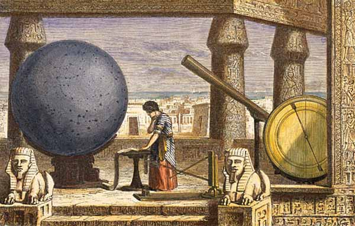
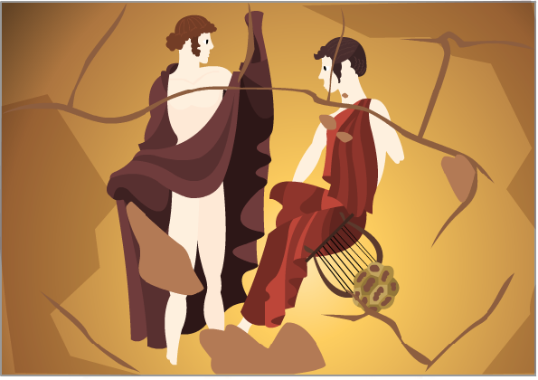
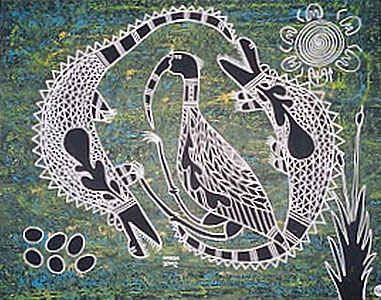
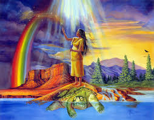
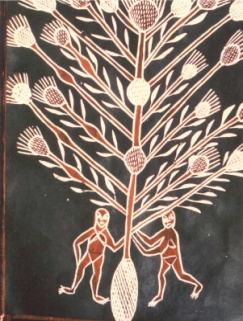

Cultural Perspectives on the Universe
The vast depths of space have been a source of inspiration throughout history and around the world. Writers created stories to explain the unexplainable. The beauty in the skies; the stars, the eclipses and the northern lights inspired artists. Farmers, hunters, gatherers, and explorers used the sky to guide their travels, predict changes in weather, and measure the length of the day.
Cultures around the world have influenced our current understanding of the universe. Western science deals mainly with the physical realm of the world. Other cultures have contributed to this body of knowledge about the physical world, as well as adding perspectives from other realms.
In this unit historical information, different cultural perspectives, and a variety of stories and tales will enhance scientific concepts. You will explore the stories and traditions of aboriginal peoples that relate to space. There is a rich diversity among the stories and traditions of aboriginal peoples, which will only be touched on here. That means there is lots of room for you to explore the topic further on your own. In the 'Earth Science Projects' section of this module, there is a project option to investigate and compare different theories about the beginning of the Universe.
The Oldest Science

Astronomy is one of the oldest sciences. Ancient peoples all over the world looked to the sky with curiosity and interest. Many societies associated celestial bodies with various gods and spirits. They often related the movements of the planets and stars with the actions of the gods. Seasonal and weather changes were also related to the changes in the sky. The science of astronomy was propelled by a need to understand weather patterns for purposes of agriculture, fishing, hunting, and simply a deep curiosity about the vast night sky.
Weather, Seasonal Changes, and Agriculture
Early cultures and civilizations used the movements of stars and visible planets to predict seasonal changes. This was very important for agricultural societies, as their harvest depended on planting crops at the right time. Aboriginal peoples used the skies to guide their fishing, hunting, and gathering of berries and plants.
In ancient Egypt, the waters of the Nile River flooded every year, creating rich soil for agriculture. Egyptian astronomers detected a pattern in this flooding. They realized that it happened at the same time each year, when the bright star, Sirius, rose before the Sun. This marked the summer solstice. This understanding meant that astronomers could predict the floods each year and plan for farming. Further, they were the first civilization to develop a 365-day calendar based on their understanding of the river's cycle.
Creation Myths

Throughout history, there have been many questions about the creation and arrangement of the universe. After all, the answers to these questions provide the basis for explaining everything we know. Understanding the universe allows us to make sense of the world that we live in, but the attempt to understand it and the underlying nature of all things is not an easy task. One of the oldest theories about where it all began suggests that a god exists beyond the physical world and that it was this god who created the universe. This theory is based on the idea that something beyond our comprehension must have been responsible for the beginning of everything. Theories such as these are often based on the assumption that the universe can have "come out of nothing". Today, theories stating that Earth and its life forms were created by a God are referred to as creationism. Other theories suggest that there was no creation or beginning of the universe and that the universe "just is". Different theories about the origin of the universe form the basis for many religious practices as well as atheistic (non-religious) viewpoints held by different people.
First Peoples of North America
The Earth Diver oral story is told by the First Peoples of North America. In this oral story, the Great Spirit or the Transformer dives, or orders animals to dive, into the primeval water to bring back mud, out of which he fashions Earth (Eastern Woodlands, Northern Plains).

In some versions of the oral story, Earth is formed on the back of a turtle; Turtle Island is a popular name used by Aboriginal and non-Aboriginal peoples for the land of North America.

First Peoples of Australia
The planet Venus is often thought of as a star - the first one to appear at night (so it is often called the Evening Star) and the last one to fade in the morning sunlight (so it is also called the Morning Star). Because of this, the planet has been part of the legends of many different cultures. It was also an important sign to the Aboriginal people of Australia, who arose at dawn to begin their hunting or fishing. They usually thought of it as a girl. This story features the Morning Star who lives on the Island of the Dead. In an oral story from Arnhem Land (in the far north of Australia), the Morning Star is named Barnumbir and she lives on an island called Bralgu, the Island of the Dead. Because she was so bright, her people often asked her to come out in their boats when they went fishing in the early morning, so that they could see better. But Barnumbir was so afraid of drowning that she always refused to go with them on the sea. Finally, two old women from the tribe solved the problem. They tied a long string around her waist so that they could pull her back to Bralgu and keep her safe in a woven basket during the day. Because she is tied to the string she cannot rise very high in the sky and was always kept near the horizon - as Venus does.

Visit the Ancient Origins to learn more about the oral stories of the First Peoples of Australia and Canada: A People's History to learn about North American myths to understand and explain their perceptions of the Universe.